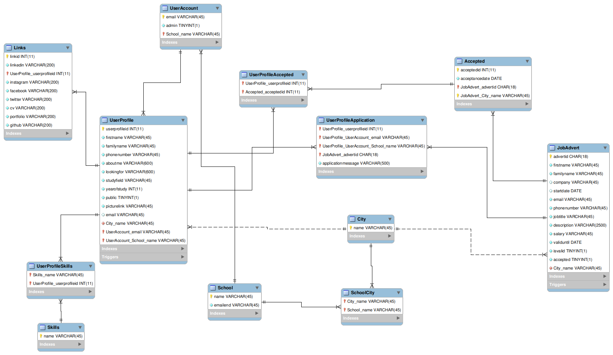

Olen opinnoissani keskittynyt varsinkin rest apien ohjelmointiin. Ohjelmoinnissa olen käyttänyt pääasiassa express.js kirjastoa
Muunmuassa ticorporate projektissa olin ryhmämme backend-ohjelmoija ja tein rest apin DigiMajakka nimiselle sovelluksellemme.
Esimerkit on otettu DigiMajakka projektin koodeista. Backendissä käytettiin express.js ja MySQL kirjastoja. Infrastruktuuri rakennettiin AWS:n palvelujen päälle.
import express from 'express';
import cookieParser from 'cookie-parser';
import cors from 'cors';
import morgan from 'morgan';
import ErrorHandler from './middlewares/error-handler';
// Import routes from routes folder
import indexRouter from './routes/index';
import profileRouter from './routes/profiles';
import joblistingRouter from './routes/joblisting';
import userRouter from './routes/users';
import imageRouter from './routes/images';
import cityRouter from './routes/cities';
import schoolRouter from './routes/schools';
import linkRouter from './routes/links';
import skillRouter from './routes/skills';
// Usage of environment varaibles
import dotenv from 'dotenv';
dotenv.config();
// Create express app
const app = express();
// Necessary middlewares
app.use(express.json({limit: '50mb'}));
app.use(express.urlencoded({extended: false, limit: '50mb'}));
app.use(cookieParser());
app.use(cors());
app.use(morgan('common'));
// Take routes in use
app.use('/', indexRouter);
app.use('/profiles', profileRouter);
app.use('/joblistings', joblistingRouter);
app.use('/users', userRouter);
app.use('/images', imageRouter);
app.use('/cities', cityRouter);
app.use('/schools', schoolRouter);
app.use('/links', linkRouter);
app.use('/skills', skillRouter);
// Take custom error handler in use
app.use(ErrorHandler);
export = app;
Profiili reitin kontrolleri
import type express from 'express';
import queryDb from '../db-connection';
import * as validation from '../validators/validation';
import type Profile from '../models/profile-model';
import CustomError from '../custom-error';
import convertBodyToQueryFormat from '../functions/convert-body-to-update-string';
import type {IAuthenticatedRequest} from '../middlewares/auth';
const profileController = {
// Function to return all profiles
async findAll(
_request: express.Request,
response: express.Response,
next: express.NextFunction,
) {
try {
const data = await queryDb(
'SELECT * FROM UserProfile WHERE public = true;',
[],
);
console.log(data);
response.status(200).json(data);
} catch (error: unknown) {
next(error);
}
},
// Return one profile by specific id
async findById(
_request: express.Request,
response: express.Response,
next: express.NextFunction,
) {
try {
const data = await queryDb(
'SELECT * FROM UserProfile WHERE userprofileid = ?',
[_request.params.profileid],
);
if (data.length <= 0) {
throw new Error('No profile found with given id');
}
console.log(data);
response.status(200).json(data);
} catch (error: unknown) {
next(error);
}
},
// Insert new profile into database
async createProfile(
_request: IAuthenticatedRequest,
response: express.Response,
next: express.NextFunction,
) {
try {
if (typeof _request.user === 'undefined') {
throw new Error('User does not exist');
}
// Find users data and citys name that users school is in
const userdata = await queryDb(
'SELECT UA.email, UA.School_name AS schoolname, SC.City_name AS cityname FROM UserAccount UA
INNER JOIN SchoolCity SC ON SC.School_name=UA.School_name WHERE UA.email = ?;',
[_request.user.email],
);
if (typeof userdata === 'undefined' || !userdata.length) {
throw new Error('User does not exist');
}
// Take users data from array
const user = userdata[0];
// Check that user object has specified keys
if ('email' in user && 'cityname' in user && 'schoolname' in user) {
// Template profile with placeholder data which will be inserted into database
const profile: Profile = {
firstname: 'Etunimi',
familyname: 'Sukunimi',
phonenumber: 'Puhelinnumero',
description: 'Kuvaus',
lookingfor: 'Mitä etsit',
studyfield: 'Koulutusala',
yearofstudy: 1,
publicity: false,
picturelink: '',
email: '',
cityname: String(user.cityname),
accountemail: String(user.email),
schoolname: String(user.schoolname),
};
// Insert placeholder data to users profile
const insertedProfile = await queryDb(
'INSERT INTO UserProfile (firstname, familyname, phonenumber, aboutme, lookingfor, studyfield, yearofstudy,
public, picturelink, email, City_name, UserAccount_email, UserAccount_School_name)
VALUES (?, ?, ?, ?, ?, ?, ?, ?, ?, ?, ?, ?, ?)',
Object.values(profile),
);
console.log(insertedProfile);
response.status(201).json({
message: 'Profile created succesfully',
success: true,
});
} else {
throw new TypeError('Error when trying to create new profile');
}
} catch (error: unknown) {
next(error);
}
},
// Updates profile
async updateProfile(
_request: express.Request,
response: express.Response,
next: express.NextFunction,
) {
try {
// Check that phone number is in valid format if it is provided
if (
_request.body.phonenumber &&
!validation.validatePhoneNumber(_request.body.phonenumber)
) {
throw new CustomError('Phonenumber is not valid', 400);
}
// Check that email is in valid format if it is provided
if (
_request.body.email &&
!validation.validateEmail(_request.body.email)
) {
throw new CustomError('Email is not valid', 400);
}
// Convert request body to sql query and query parameters
// Convert function is used here because fields that user wants to update is random
// Because of this constant sql query cannot handle all requests
const {sql, sqlparams} = convertBodyToQueryFormat(
_request,
'UserProfile',
'userprofileid',
);
const update = await queryDb(sql, [
...sqlparams,
_request.params.profileid,
]);
console.log('Update succesfull');
console.log(update);
response.status(200).json({
message: 'Updated profile succesfully',
success: true,
});
} catch (error: unknown) {
next(error);
}
},
// Deletes profile by id
async deleteProfile(
_request: express.Request,
response: express.Response,
next: express.NextFunction,
) {
try {
const result = await queryDb('CALL deleteProfile(?);', [
_request.params.profileid,
]);
console.log(result);
response.status(200).json({
message: 'Deleted profile succesfully',
success: true,
});
} catch (error: unknown) {
next(error);
}
},
// Find profile by user email
async findByEmail(
_request: IAuthenticatedRequest,
response: express.Response,
next: express.NextFunction,
) {
try {
let userEmail = '';
if (_request.user && typeof _request.user.email === 'string') {
userEmail = _request.user.email;
} else {
throw new Error('Token is not valid or email not received in token');
}
const data = await queryDb(
'SELECT * FROM UserProfile WHERE UserAccount_email = ?',
[userEmail],
);
if (data.length <= 0) {
throw new Error('No profile found with given email');
}
console.log(data);
response.status(200).json(data);
} catch (error: unknown) {
next(error);
}
},
};
export default profileController;
Profiili kontrollerissa käytetty funktio joka muuttaa http pyynnön mukana tulevan bodyn datan SQL kyselyksi. Funktio tarvittiin koska haluttiin että frontendistä ei tarvinnut lähettää kaikkia profiilin kenttiä tietoja päivittäessä backendille.
/* eslint-disable @typescript-eslint/comma-dangle */
import type express from 'express';
/**
* Converts request body to sql query string ('') and parameter values ([values]) used in mysql.query(query, parameters) method
* @param {express.Request} request express request
* @param {string} tablename table in database which query will affect
* @param {string} idcolumnname Primary keys name in that database table
* @return {object} object which contains sql string and values in array used in mysql.query() function
*/
const convertBodyToQueryFormat = (
request: express.Request,
tablename: string,
idcolumnname: string,
) => {
if (!request.body) {
throw new Error('No body received in request');
}
// Take values values from object to array
const values: unknown[] = Object.values(request.body);
// Take keys(columns) from object to array
const keys = Object.keys(request.body);
// Update string will contain update query
// It is constructed from values and keys separated from object
// This allows to use this route to update any number of columns in table row
// Start string of the query
let sql = 'UPDATE ' + tablename + ' SET ';
// Add each of keys(column names) one by one into sql string
for (const x of keys) {
sql += String(x) + ' = ?';
// If added last key then insert justimport process from 'node:process';
import {CognitoIdentityServiceProvider} from 'aws-sdk';
import type express from 'express';
// Cognito service
const identityServiceProvider = new CognitoIdentityServiceProvider({
region: process.env.REGION,
});
// Type for user attribute. Used to extend request
export type IUser = {
id: string | undefined;
email: string | undefined;
};
// Extended Request type providing user attribute and authorization header
export type IAuthenticatedRequest = {
user?: IUser;
headers: {
authorization?: string;
};
} & express.Request;
/**
* Checks that there is token and places users information from decoded token to requests user attribute
* @param {IAuthenticatedRequest} _request express request
* @param {express.Response} _response express response
* @param {express.NextFunction} next express next function
*/
export const authHandler = async (
_request: IAuthenticatedRequest,
_response: express.Response,
next: express.NextFunction,
) => {
try {
// Check that there is authorization header
if (_request.headers.authorization) {
const token = _request.headers.authorization;
// Get raw user data from token
const rawUser = await identityServiceProvider
.getUser({AccessToken: token})
.promise();
// Place cognito id and email to requests user attribute
_request.user = {
id: rawUser.UserAttributes.find((attr) => attr.Name === 'sub')?.Value,
email: rawUser.UserAttributes.find((attr) => attr.Name === 'email')
?.Value,
};
// Move to next middleware
next();
} else {
throw new Error('No authorization header received');
}
} catch (error: unknown) {
next(error);
}
}; empty ' ' otherwise ',' is needed
sql += keys.indexOf(x) === keys.length - 1 ? ' ' : ', ';
}
// Last part of update string where you specify profile id
sql += 'WHERE ' + idcolumnname + ' = ?;';
return {
sql: sql,
sqlparams: values,
};
};
export default convertBodyToQueryFormat;
Syötteitä validoitiin projektissa esimerkiksi factory functioiden avulla.
// Factory function is used to make sure there are no unwanted fields in object which contains new advert.
// Factory function also places default values into object keys if no value is given.
const jobadvertFactor = ({
advertid = '',
firstname = '',
familyname = '',
company = null,
startdate = null,
email = 'esimerkki@sahkoposti.com',
phonenumber = '000-0000-0000',
jobtitle = '',
description = '',
salary = '',
validuntil = '0000-00-00',
isvalid = true,
accepted = false,
city = '',
}: Jobadvert): Jobadvert => ({
advertid,
firstname,
familyname,
company,
startdate,
email,
phonenumber,
jobtitle,
description,
salary,
validuntil,
isvalid,
accepted,
city,
});
Tietokannoista minulta löytyy osaamista SQL kielestä sekä MongoDB:stä.
DigiMajakka projektissa tein esimerkiksi proceduureja ja eventtejä tietokantaamme. SQL lauseita esittelin jo aikaisemmassa kontrollerin koodissa.
Lisäksi suunnittelin projektissa tietokannan rakennetta. Esimerkkinä tietokannan ER-malli.
MongoDB:stä esimerkkinä backend 1 kurssin lopputyöstä otettua koodia jossa käytetty mongoose kirjastoa.
const mongoose = require('mongoose');
const Schema = mongoose.Schema;
const MotorSchema = require('./Motor');
const Car = new Schema({
license: {
type: String,
maxlength: 7,
match: /[A-Z]{3}-[0-9]{3}/,
minlength: 7,
unique: true,
required: true,
},
brand: {
type: String,
maxlength: 20,
required: true,
},
model: {
type: String,
maxlength: 20,
required: true,
},
year: {
type: Number,
max: new Date().getFullYear(),
min: 1888,
required: true,
},
kilometers: {
type: Number,
max: 999999,
min: 0,
required: true,
},
motor: {
type: MotorSchema,
required: true,
},
user: {
type: String,
maxlength: 30,
required: true,
},
});
const model = mongoose.model('Car', Car);
module.exports = model;
const Car = require('../models/Car');
const User = require('../models/User');
// Kaikkien autojen haku
exports.findAll = (req, res) => {
Car.find()
.then((response) => {
res.status(200).json(response);
})
.catch((error) => {
console.error(error);
res.status(400).send({
message: 'Error occured',
error: error,
});
});
};
// Auton haku id:n perusteella
exports.findByID = (req, res) => {
Car.find({ _id: req.params.id })
.then((response) => {
res.status(200).json(response);
})
.catch((error) => {
console.error(error);
res.status(400).send({
message: 'Error occured',
error: error,
});
});
};
// Auton haku rekisterinumeron perusteella
exports.findByLicense = (req, res) => {
Car.find({ license: req.params.license })
.then((response) => {
res.status(200).json(response);
})
.catch((error) => {
console.error(error);
res.status(400).send({
message: 'Error occured',
error: error,
});
});
};
// Auton lisäys kantaan
exports.add = (req, res) => {
// Sijoitetaan käyttäjänimi pyynnön bodyyn
req.body.user = req.decoded.username;
// lisättävän auton tiedot tulevat pyynnön bodyssä
Car.create(req.body)
.then((response) => {
// kun käyttäjälle lisätään auto myös hänen autojen määrää on lisättävä yhdellä
User.updateOne(
{ username: req.decoded.username },
{ $inc: { numOfCars: 1 } }
).then((response) => {
console.log(response);
});
console.log('Document added succesfully');
res.status(201).json(response);
})
.catch((error) => {
res.status(error.status || 400).send({
message: 'Error when posting data',
error: error,
});
});
};
// Auton poisto kannasta id:n perusteella
exports.delByID = (req, res) => {
Car.findOneAndDelete({ _id: req.params.id })
.then((response) => {
User.updateOne(
{ username: response.user },
{ $inc: { numOfCars: -1 } }
).then((response) => {
console.log(response);
});
console.log(`Deleted car with license:${response.license} succesfully`);
res.status(200).json(response);
})
.catch((error) => {
console.error(error);
res.status(error.status || 400).send({
message: 'Error when deleting data',
error: error,
});
});
};
// Auton poisto rekisterinumeron perusteella
exports.del = (req, res) => {
Car.findOneAndDelete({ license: req.params.license })
.then((response) => {
User.updateOne(
{ username: response.user },
{ $inc: { numOfCars: -1 } }
).then((response) => {
console.log(response);
});
console.log(`Deleted car with license:${response.license} succesfully`);
res.status(200).json(response);
})
.catch((error) => {
console.error(error);
res.status(error.status || 400).send({
message: 'Error when deleting data',
error: error,
});
});
};
// Pyynnön ensimmäinen parametri kertoo päivitettävän auton rekisterinumeron
// Toinen parametri kertoo tiedon joka halutaan päivittää
// Kolmas parametri kertoo päivitetyn arvon valitulle tiedolle
exports.updateByIDParams = (req, res) => {
Car.updateOne(
{ _id: req.params.id },
{ 'req.params.field': req.params.value }
)
.then((response) => {
console.log('Update succesfull');
res.status(200).json(response);
})
.catch((error) => {
console.error(error);
res.status(400).send({
message: 'Update failed',
error: error,
});
});
};
// Autojen tietojen päivitys id:n perusteella
exports.updateByID = (req, res) => {
Car.updateOne({ _id: req.params.id }, req.body)
.then((response) => {
// Tarkistetaan että käyttäjä joka yrittää muokata auton tietoja on auton omistaja tai admin
console.log('Update succesfull');
res.status(201).json(response);
})
.catch((error) => {
console.error(error);
res.status(error.status || 400).send({
message: 'Error when updating data',
error: error,
});
});
};
// Autojen tietojen päivitys rekisterinumeron perusteella
exports.updateByLicense = (req, res) => {
Car.updateOne({ license: req.params.license }, req.body)
.then((response) => {
// Tarkistetaan että käyttäjä joka yrittää muokata auton tietoja on auton omistaja tai admin
console.log('Update succesfull');
res.status(201).json(response);
})
.catch((error) => {
console.error(error);
res.status(error.status || 400).send({
message: 'Error when updating data',
error: error,
});
});
};
// Auton haku käyttäjänimen perusteella
exports.findByOwner = (req, res) => {
Car.find({ user: req.params.user })
.then((response) => {
res.status(200).json(response);
})
.catch((error) => {
console.error(error);
res.status(error.status || 400).send({
message: 'Error when finding data',
error: error,
});
});
};
// Autojen haku vuosimallin perusteella
exports.findByYear = (req, res) => {
Car.find({ year: req.params.year })
.then((response) => {
console.log('Find succesfull');
res.status(200).json(response);
})
.catch((error) => {
console.error(error);
res.status(400).send({
message: error.message,
error: error,
});
});
};
// Autojen haku vuosimallin perusteella tietyltä vuosi väliltä
exports.findBetweenYear = (req, res) => {
Car.find({ year: { $gte: req.params.min, $lte: req.params.max } })
.then((response) => {
console.log('Find succesfull');
res.status(200).json(response);
})
.catch((error) => {
console.error(error);
res.status(400).send({
message: error.message,
error: error,
});
});
};
// Haku moottorin koon perusteella
exports.findByDisplacement = (req, res) => {
Car.find({
'motor.displacement': req.params.displacement,
})
.then((response) => {
console.log('Find succesfull');
res.status(200).json(response);
})
.catch((error) => {
console.error(error);
res.status(400).send({
message: error.message,
error: error,
});
});
};
Backendin arkkitehtuuri koostuu pääasiassa kontrollolereista ja routereista. Alla esimerkkinä kontrolleri ja router, josta löytyy toiminnot koulujen hakemiseen.
DigiMajakka sovellus toteutettiin seuraavanlaisessa ympäristössä joka oli rakennettu aws palveluita käyttäen.
Koodista aws palveluihin saatiin yhteys aws-sdk kirjaston avulla. Esimerkkinä käyttäjänhallintaa varten toteutettu luokka.
import process from 'node:process';
import dotenv from 'dotenv';
import {CognitoIdentityServiceProvider} from 'aws-sdk';
dotenv.config();
import {
AuthenticationDetails,
CognitoUser,
CognitoUserAttribute,
CognitoUserPool,
} from 'amazon-cognito-identity-js';
class CognitoHelper {
public userPool: CognitoUserPool;
public cognitoIdentity: CognitoIdentityServiceProvider;
constructor() {
this.userPool = new CognitoUserPool({
UserPoolId: process.env.USER_POOL_ID ?? '',
ClientId: process.env.CLIENT_ID ?? '',
});
this.cognitoIdentity = new CognitoIdentityServiceProvider({
accessKeyId: process.env.COGNITO_ACCESS_KEY,
secretAccessKey: process.env.COGNITO_SECRET_KEY,
region: process.env.REGION,
});
}
/**
* Method that signs new user to cognito and database
* @param {string} email users email
* @param {string} password users password
* @return {Promise} resolved promise
*/
async signUp(email: string, password: string) {
return new Promise((resolve, reject) => {
const attributeList: CognitoUserAttribute[] = [
new CognitoUserAttribute({
Name: 'email',
Value: email,
}),
];
// Signup user to cognito
this.userPool.signUp(
email,
password,
attributeList,
[],
(error, result) => {
if (error) {
reject(error);
}
// If signup was succesfull return username
resolve(result?.user.getUsername());
},
);
});
}
/**
* Method that confirms user registration with code that cognito sent via email
* @param {string} email users email
* @param {string} code users confirmation code received via email
* @return {Promise} resolved promise
*/
async confirmSignUp(email: string, code: string) {
// Create new instance of CognitoUser
return new Promise((resolve, reject) => {
const cognitoUser = new CognitoUser({
Username: email,
Pool: this.userPool,
});
// Use cognitoUser class method to verify confirmation code
cognitoUser.confirmRegistration(code, true, (error, result) => {
if (error) {
reject(error);
}
resolve(JSON.stringify(result));
});
});
}
/**
* Method to resend confirmation code to user
* @param {string} email users email
* @return {promise} resolved promise
*/
async resendConfirmCode(email: string) {
// Create new instance of CognitoUser
return new Promise((resolve, reject) => {
const cognitoUser = new CognitoUser({
Username: email,
Pool: this.userPool,
});
// Use class method to resend confirmation code
cognitoUser.resendConfirmationCode((error, result) => {
if (error) {
reject(error);
}
resolve(JSON.stringify(result));
});
});
}
/**
* Method to sign user in
* @param {string} email users registered email
* @param {string} password users password
* @return {Promise} resolved promise
*/
async signIn(email: string, password: string) {
return new Promise((resolve, reject) => {
const cognitoUser = new CognitoUser({
Username: email,
Pool: this.userPool,
});
const authenticationDetails = new AuthenticationDetails({
Username: email,
Password: password,
});
this.cognitoIdentity.adminGetUser(
{
UserPoolId: process.env.USER_POOL_ID || '',
Username: email || '',
},
(error) => {
if (error) reject(error); // an error occurred
},
);
cognitoUser.authenticateUser(authenticationDetails, {
// If sign in was success check if user has confirmed their account with code
onSuccess(session, userConfirmationNecessary) {
if (userConfirmationNecessary) {
resolve({userConfirmationNecessary});
}
// In case of everything is ok send token of signed in user forward
resolve({
accessToken: session.getAccessToken().getJwtToken(),
});
},
onFailure(error) {
reject(error);
},
});
});
}
/**
* Method that signs user out
* @param {string} email users email
* @return {Promise} resolved promise
*/
async signOut(email: string) {
return new Promise((resolve) => {
const cognitoUser = new CognitoUser({
Username: email,
Pool: this.userPool,
});
cognitoUser.signOut(() => {
resolve('Signed out successfully');
});
});
}
/**
* Method to for authenticated user to delete their account/data from cognito and database
* @param {string} email users email
* @param {string} password users password fro authentication
* @return {Promise} promise
*/
async deleteUser(email: string, password: string) {
return new Promise((resolve, reject) => {
// Create new instance of cognitoUser
const cognitoUser = new CognitoUser({
Username: email,
Pool: this.userPool,
});
// Details for authentication
const authenticationDetails = new AuthenticationDetails({
Username: email,
Password: password,
});
// Try to authenticate user
cognitoUser.authenticateUser(authenticationDetails, {
// If sign in was success check if user has confirmed their account with code
onSuccess(_session, userConfirmationNecessary) {
if (userConfirmationNecessary) {
resolve({userConfirmationNecessary});
}
// On successfull login delete user
cognitoUser.deleteUser((error, result) => {
if (error) {
reject(error);
}
console.log(result);
resolve(result);
});
},
onFailure(error) {
reject(error);
},
});
});
}
/**
* Method to start password reset workflow. This will send email with confirmation code to user
* @param {string} email users email
* @return {Promise} promise
*/
async resetPassword(email: string) {
return new Promise((resolve, reject) => {
const cognitoUser = new CognitoUser({
Username: email,
Pool: this.userPool,
});
this.cognitoIdentity.adminGetUser(
{
UserPoolId: process.env.USER_POOL_ID || '',
Username: email || '',
},
(error) => {
if (error) reject(error); // an error occurred
},
);
cognitoUser.forgotPassword({
onSuccess: function (result) {
console.log('call result: ' + result);
resolve(result);
},
onFailure: function (error) {
reject(error);
},
});
});
}
/**
* Method to complete password reset request
* @param {string} email users email
* @param {string} confirmationCode password reset confirmation code received via email
* @param {string} newPassword new password provided by user
* @return promise
*/
async confirmPassword(
email: string,
confirmationCode: string,
newPassword: string,
) {
return new Promise((resolve, reject) => {
const cognitoUser = new CognitoUser({
Username: email,
Pool: this.userPool,
});
cognitoUser.confirmPassword(confirmationCode, newPassword, {
onFailure(error) {
reject(error);
},
onSuccess() {
resolve('Password reset success');
},
});
});
}
}
export default CognitoHelper;
Olen käynyt kursseja tekoälyn kehittämiseen liittyen ja esimerkiksi tähän olen valinnut tekemäni lopputyön. Kyseessä on tensorflow.js kirjastolla toeteutettu neuroverkko joka tunnistaa kuvasta onko ihmisellä kasvomaski naamalla vai ei.
const tf = require('@tensorflow/tfjs-node');
const fs = require('fs');
const path = require('path');
// Funktio saa parametrina kansion osoitteen jossa kuvat ovat ja labelin joka kyseisille kuville annetaan
// Kuvat otetaan kansiosta ja muutetaan tensoreiksi jonka jälkeen niistä tehdään objekteja
// objetkit sisältävät kuva tensorin ja sitä vastaavan label arvon eli muoto on {xs, ys}
// Funktio toimii vain kun kyseessä on kuvien luokittelu koska parametrinä määritelty label annetaan kaikille
// kansiossa oleville kuville (esim. 0 tai 1)
async function imgsToObjArr(imgArrSrc = '', label) {
// Objektit tallennetaan arr taulukkoon
const arr = [];
// Haetaan kaikki tiedostonimet readdirSync metodilla
const filenames = await fs.readdirSync(imgArrSrc);
// Jokainen tiedosto käydään erikseen lävitse
await filenames.forEach((file) => {
// tarkistetaan että tiedoston pääte on jpg tai jpeg jotta mahdolliset virheelliset tiedostot saadaa
// karsittua pois
if (path.extname(file) == '.jpg' || path.extname(file) == '.jpeg') {
// koska kansion tiedostojen nimet ovat sring muodossa filenames taulukossa saadaan kansiopolusta ja
// filenames taulukon alkiosta yksittäisen kuvan osoite readFileSync metodille
const img = fs.readFileSync(`${imgArrSrc}/${file}`);
// Kun kuva on haettu img muuttujaan se muutetaan tensoriksi tensorflown decodeImage metodilla
const imgtensor = tf.node.decodeImage(img, 3);
// Kuvat ovat yleensä valtavan kokoisia ja maskin tunnistamiseen kuvasta ei todellakaan tarvita
// kovinkaan tarkkaa kuvaa joten kuvat pienennetään 64x64 pikselin kokoisiksi
const imgResized = tf.image.resizeBilinear(imgtensor, [64, 64]);
// lisätään kuva parametrina annetun labelin kanssa palautettavaan taulukkoon
arr.push({ img: imgResized, label: label });
}
});
return arr;
}
// Funktio erottaa xs ja ys arvot omiin taulukkoihinsa objekti taulukosta
function getValsFromObjArr(objArr) {
// otetaan xs arvot mapilla omaan taulukkoonsa
const xsArr = objArr.map((elem) => {
return elem.img;
});
// otetaan ys arvot mapilla omaan taulukkoonsa ja muutetaan ne onehot muotoon
const ysArr = objArr.map((elem) => {
return elem.label === 1 ? [1, 0] : [0, 1];
// return elem.label;
});
return {
xsArr,
ysArr,
};
}
// Funktio normalisoi tensorin
// Funktiolle voidaan syöttää minimi ja maksimi arvot jolloin se käyttää niitä eikä laske arvoja
// syötetystä tensorista
// Jos arvoja ei anneta ne lasketaan tensorista ja myös palautetaan myöhempää käyttöä varten
async function normalize(tensor, maxVal, minVal) {
// Jos min ja max arvot on annettu käytetään niitä
if (maxVal && minVal) {
const max = maxVal;
const min = minVal;
return tensor.sub(min).div(max.sub(min));
} else {
// muulloin ne lasketaan syötetystä tensorista
const max = tf.max(tensor);
const min = tf.min(tensor);
// Tällöin palautuu objekti joka sisältää normalisoidun tensorin ja min sekä max arvot
return { normlizedTensor: tensor.sub(min).div(max.sub(min)), min, max };
}
}
// createModel luo modelin
// Koska kyseessä on kuvanluokittelu tehtävä käytetään convolutionaalista neuroverkkoa
/*
Verkon rakenne on:
convolutional layer(relu) + Maxpooling layer
convolutional layer(relu) + Maxpooling layer
convolutional layer(relu) + Maxpooling layer
flatten layer
dense layer(relu)
dense layer(relu)
dense layer(softmax) eli output
*/
// Funktio jolla voidaan erottaa taulukosta haluttu määrä testi dataa
// parametrina annetava taulukko josta data halutaan erottaa mutatoidaan tarkoituksella ettei
// testidata sekoitu harjoitusdataan
function separateTestData(amount, arr) {
// Leikataan splicella taulukosta haluttu määrä testidataa
const testArr = arr.splice(
arr.length * (1 - amount),
arr.length - arr.length * amount
);
return testArr;
}
function createModel() {
const model = tf.sequential();
// Convolutionaalinen layer
model.add(
tf.layers.conv2d({
filters: 16,
kernelSize: [3, 3],
activation: 'relu',
inputShape: [64, 64, 3],
})
);
// pooling layer
model.add(tf.layers.maxPooling2d([4, 4]));
model.add(
tf.layers.conv2d({
filters: 8,
kernelSize: [3, 3],
activation: 'relu',
})
);
model.add(tf.layers.maxPooling2d([2, 2]));
model.add(
tf.layers.conv2d({
filters: 2,
kernelSize: [3, 3],
activation: 'relu',
})
);
model.add(tf.layers.maxPooling2d([1, 1]));
model.add(tf.layers.flatten());
model.add(tf.layers.dense({ units: 10, activation: 'relu' }));
model.add(tf.layers.dense({ units: 5, activation: 'relu' }));
model.add(tf.layers.dense({ units: 2, activation: 'softmax' }));
// Modelin kääntäminen
model.compile({
optimizer: tf.train.adam(0.01),
// Koska kyseessä on kuvanluokittelu jossa output on muodossa [0,1] eli sisältää kaksi todennäköisyyttä
// käytetään categoricalCrossentropy loss funktiota
loss: 'categoricalCrossentropy',
metrics: ['accuracy'],
});
return model;
}
async function run() {
// haetaan kuvat ja labelit
// Maskittomien kuvat sijaitsevat './0' kansiossa ja maskillisten kuvat './1' kansiossa
// Maskittomien kuvat
const imagesObj0 = await imgsToObjArr('./0', 0);
// Maskillisten kuvat
const imagesObj1 = await imgsToObjArr('./1', 1);
// yhdistetään taulukot myöhempää käsittelyä varten
const imagesObjmerged = imagesObj0.concat(imagesObj1);
// Koska data on tällä hetkellä järjestetty niin että maskittomien kuvat ovat peräkkäin ennen maskillisten kuvia
// pitää data sekoittaa että neuroverkko saa kumpiakin kuvia harjoittaessa satunnaisessa järjestyksessä
// Sekoitetaan tensorflown shuffle() metodilla
tf.util.shuffle(imagesObjmerged);
// Muutetaan {kuva, label} objektejen kuvat ja labelit omiksi taulukoikseen
// Tuloksena on siis xs taulukko ja ys taulukko
const { xsArr, ysArr } = await getValsFromObjArr(imagesObjmerged);
// Kuinka paljon testidataa halutaan erottaa 0.1 = 10%
const testAmount = 0.1;
// Erotetaan splicella xs taulukosta haluttu määrä testidataa
const testXsArr = separateTestData(testAmount, xsArr);
// Erotetaan splicella ys taulukosta haluttu määrä testidataa
const testYsArr = separateTestData(testAmount, ysArr);
// Taulukot muunnetaan tensoreiksi
// koska xsArr taulukko sisältää tensoreita muutetaan se tensoriksi käyttämällä tensorflown
// stack() metodia. Metodi muuttaa juurikin tensoreita sisältävän taulukon tensoriksi
const xsTensorUnNlized = tf.stack(xsArr);
// xs tensori pitää vielä normalisoida
// koska max ja min arvoja tarvitaan vielä myöhemmin ne otetaan myös talteen
// muuttujiin max ja min
const {
normlizedTensor: xsTensor,
max,
min,
} = await normalize(xsTensorUnNlized);
// muutetaan ys taulukko tensoriksi
const ysTensor = await tf.tensor(ysArr);
// Koska haluamme käyttää min ja max arvoja myöhemmin valmiin tallennetun modelin kanssa
// Tallennetaan ne tekstitiedostoon
console.log(max);
const maxData = `${max.dataSync()}`;
const minData = `${min.dataSync()}`;
fs.writeFileSync('./min_max_vals/max.txt', maxData);
fs.writeFileSync('./min_max_vals/min.txt', minData);
// Luodaan model
const model = await createModel();
// Harjoitetaan model harjoitusdatalla
await model.fit(xsTensor, ysTensor, {
epochs: 50,
// Validationsplit ottaa annetun määrän harjoitusdataa joka kierroksella ja validoi kierroksen tulosta
// jo harjoittaessa
validationSplit: 0.1,
callbacks: {
// Seurataan lossia harjoituksen ajan console.log:lla epoch ja loss
onEpochEnd: async (epoch, logs) => {
console.log('Epoch: ' + epoch + ' Loss: ' + logs.loss);
},
},
});
// Tehdään testi xs arvoista tensori ja normalisoidaan sen arvot. Huomaa että tässä käytetään
// jo tiedettyjä min ja max arvoja
const testTensorXS = await normalize(tf.stack(testXsArr), max, min);
// Tehdään test ys arvoista tensori
const testTensorYS = tf.tensor(testYsArr);
// Evaluoidaan modeli testidatalla
const result = await model.evaluate(testTensorXS, testTensorYS, {
batchSize: 32,
});
console.log('loss');
// evaluoinnin loss
result[0].print();
console.log('accuracy');
// evaluoinnin accuracy
result[1].print();
// Testataan modelia vielä omalla oikealla kuvalla
// haetaan kuva readFileSync metodilla
const testImage = await fs.readFileSync('./testImages/test1.jpg');
// Muutetaan kuva tensoriksi decodeImage metodilla
let testImgTensor = await tf.node.decodeImage(testImage, 3);
// Muutetaan kuva oikeaan kokoon
testImgTensor = await tf.image.resizeBilinear(testImgTensor, [64, 64]);
// Normalisoidaan tensori
testImgTensor.print();
testImgTensor = await normalize(testImgTensor, max, min);
// Laajennetaan testi tensorin ulottovuutta jotta muoto on sopiva inputille
testImgTensor = testImgTensor.expandDims(0);
// suoritetaan ennustus
const prediction = model.predict(testImgTensor);
// tulostetaan ennustus
prediction.print();
// ennustuksen ensimmäinen alkio kertoo millä todennäköisyydellä kuvan henkilöllä on maski naamalla
console.log(prediction.dataSync()[0]);
// Tallennetaan modeli
// Kommentoitu pois koska hyvä modeli on jo tallennettuna
// const saveResult = await model.save(
// 'file:////Users/kallekaitamaki/Documents/imageClassificator/faceMaskClassifier'
// );
}
run();